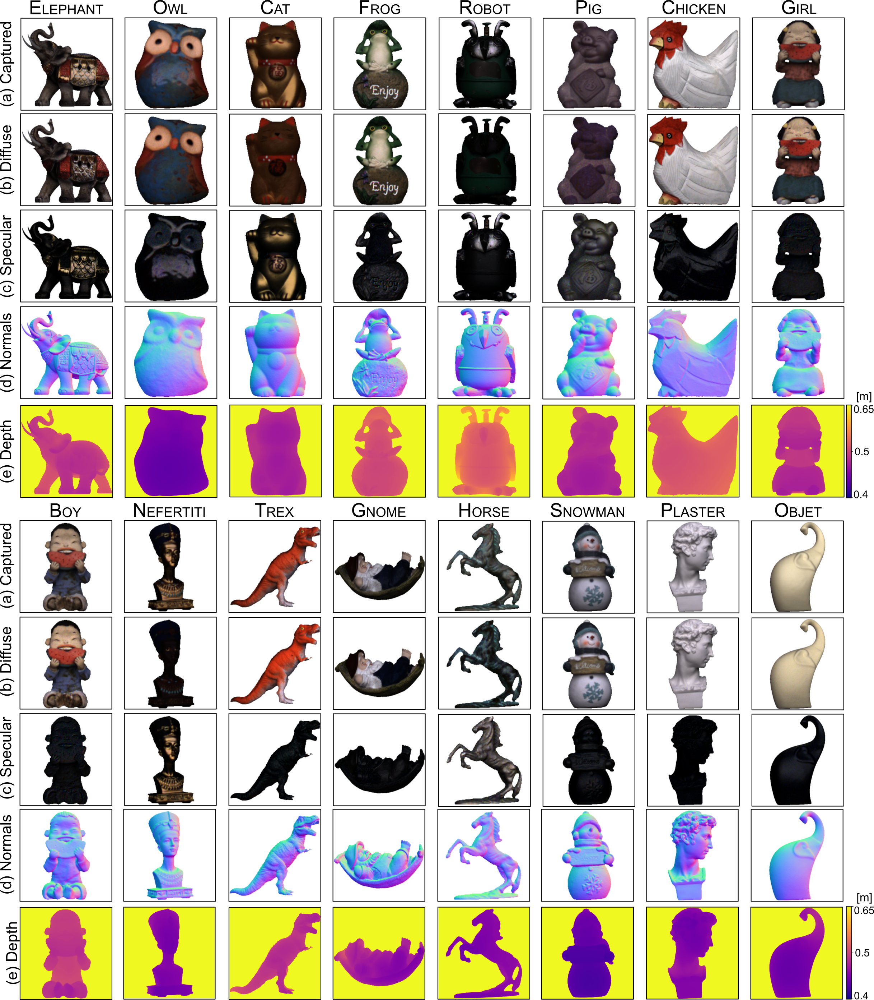
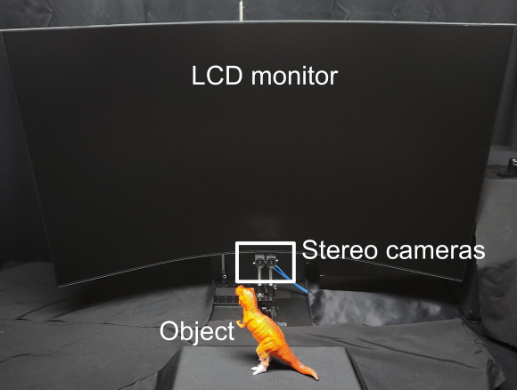

Overview
The capture system consists of an LCD monitor as the light source and a stereo polarized camera for imaging. For each object, we sequentially projected 144 (16 × 9) OLAT patterns and captured them. The scanned mesh was then aligned to the scene pose to obtain ground truth depth and normal maps.

Results (Photometric Stereo)
| Avg. | Elephant | Owl | Cat | Frog | Robot | Pig | Chicken | Girl | Boy | Nefertiti | Trex | Gnome | Horse | Snowman | Plaster | Objet | |
|---|---|---|---|---|---|---|---|---|---|---|---|---|---|---|---|---|---|
| Woodham | 23.14 | 27.02 | 26.60 | 21.05 | 21.58 | 28.18 | 17.02 | 18.39 | 24.86 | 21.44 | 37.03 | 18.98 | 19.83 | 19.27 | 32.21 | 19.56 | 17.28 |
| PS-FCN | 17.29 | 20.26 | 15.17 | 10.61 | 19.15 | 16.68 | 15.80 | 11.91 | 25.96 | 22.27 | 20.03 | 18.22 | 19.33 | 17.48 | 18.75 | 17.25 | 7.73 |
| SRSH | 25.25 | 26.21 | 18.49 | 16.95 | 23.42 | 19.09 | 32.76 | 17.88 | 37.14 | 31.19 | 23.97 | 25.05 | 27.44 | 27.70 | 27.96 | 26.93 | 21.87 |
| SCPS-NIR | 24.17 | 22.75 | 7.93 | 8.97 | 16.28 | 17.87 | 34.89 | 10.43 | 45.12 | 37.18 | 52.97 | 21.85 | 16.64 | 48.98 | 15.65 | 21.30 | 7.94 |
| UniPS (M=64) | 23.27 | 24.93 | 18.33 | 19.54 | 24.99 | 22.18 | 25.72 | 23.07 | 26.38 | 30.65 | 28.71 | 21.86 | 24.48 | 26.72 | 18.89 | 19.43 | 16.39 |
| SDM-UniPS (M=64) | 14.89 | 18.83 | 14.37 | 9.70 | 14.12 | 14.85 | 15.33 | 16.05 | 14.99 | 15.22 | 22.73 | 14.58 | 13.46 | 16.93 | 15.18 | 12.55 | 9.38 |
Qualitative Results